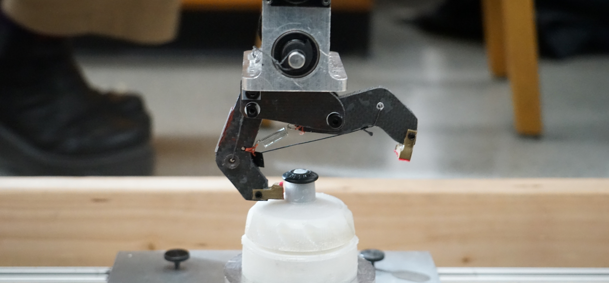

Design 1 Gripper Project
Project Description
The objective of this project is to design and build a mechanism that would actuate in order to grip a supplied object when attached to a driven axle. The gripper would be mounted to a mounting plate that is at the base of the supplied motor assembly (pictured right). The gripper and object would then be swung from a 90 degree angle. After swinging, the object's location relative to its start would be measured, and if the object had displaced more than 0.1 inches in any direction, the gripper would not qualify. The performance of the gripper, past its ability to maintian control the object, would be determined by its weight.
The design had a couple major constraints that our gripper had to
follow.
Teammates
The Design Process
Going into the first design review, we assumed that the arm itself was massless. This is neither practical nor possible, but we chose to runw ith it because the center of mass of the arm was so close to the axis of rotation-- thus the moment caused by the arm itself was negligible compared to the torque of the servo, the weight of the counterweight, and the force due to the weight.
Additionally, we assumed that the arm would lift a max of 60 degrees. Although the servo was capable of rotating further, as the arm increased in angle, the change in x position due to trigonometric properties would cause the arm to no longer be ablle to lift the weight. As a result, a 60% lift angle would be a safe bet for the actual max lift angle. Lastly, we assumed that the max torque by the servo was 57 oz-in. After some prototyping, we discovered that we weren't getting anywhere near that torque despite that was what the manufacturer rated the servo for.
Once we were happy with our conceptual design, we used Solidworks to model the crane in an assembly. This allowed us to perform some basic simulations to determine the deflection at the end of the crane as well as its structural validity. These calculations helped determine what the inner and outer diameter of our structural members needed to be.

Manufacturing
Manufacturing was a major aspect to this project for a variety of reasons. Not only did we have to utalize advanced machining, such as the CNC mill, to produce the required geometries for the arms, but for our second version, we had to mill carbon fiber sheets which called for specific manufacturing processes. This allowed us to create geometries that were more condusive to the bending and loads that we were expecting in durring the testing procedure.


 Our idea to produce the lightest gripper in the class was centered
around the usage of carbon fiber sandwich board for the main body of the
gripper. The use of this material posed specific challenges regarding to the
manufacturing of said parts. Since the material we were using was carbon fiber,
we had to search out specialized machines on campus that could handle the
handle the material without causing health risks. Once we were able to secure
time on a machine, we were able to mill out each of our components using
high frequency and rpm was used along with a downward spiral, two flute end mill for optimal results.
Finally, once the parts were cleaned up a bit with a drill press, we applied
two part epoxy along the edges of the parts which dramatically increased the
rigidity of the foam core carbon fiber in off axis loading.
Our idea to produce the lightest gripper in the class was centered
around the usage of carbon fiber sandwich board for the main body of the
gripper. The use of this material posed specific challenges regarding to the
manufacturing of said parts. Since the material we were using was carbon fiber,
we had to search out specialized machines on campus that could handle the
handle the material without causing health risks. Once we were able to secure
time on a machine, we were able to mill out each of our components using
high frequency and rpm was used along with a downward spiral, two flute end mill for optimal results.
Finally, once the parts were cleaned up a bit with a drill press, we applied
two part epoxy along the edges of the parts which dramatically increased the
rigidity of the foam core carbon fiber in off axis loading.
Design Review I
We were getting essentially 2 inches of height up until the night before the first design review. The main source of error that we encountered was the fact that the servo we were using was not consistent. Not only did we see different capabilities between different controllers, but also when we began the design review, we realized that the servo was performing at a reduced level compared to the night before. Our suspicions were confirmed when we switched servos and our crane performed better.

The actual output of our crane was much worse than the calculations that we did to find our theoretical servo torque as well as our theoretical lift height. Initially we calculated that using a counterweight that had its center of mass six inches from the axis of rotation would provide plenty of torque to allow for the servo to easily lift the weight. Unfortunately, when we placed our design on the field, we quickly found that the arm could barely lift the weight and that the crane was nowhere near the 2 inches that we needed to achieve.
Final Design
Coming out of the first review, we added a 45 degree bend in the lever arm and improved our counterweight so it would no longer hit our crane arm. Additionally, we milled a smaller base that allowed for more adjustability when it came to iterating for our final version.
Our final crane was extremely adjustable in terms of rotation as well as adjusting our servo mount to get the arm to interact with the weight at the correct angle. Hollowed rods allowed for us to minimize weight without sacrificing structural integrity, especially in respect to bending.The tension strips that were instrumental in preventing further bending as it prevented bending for the first 60% of the crane arm length. The angled arm allowed for the weight to be lifted at a larger distance from the servo while still allowing the servo to cotrol the arm at the beginning.
As a group we were able to design and manufacture a crane that lifted the weight 4.875 inches which was second in the class.